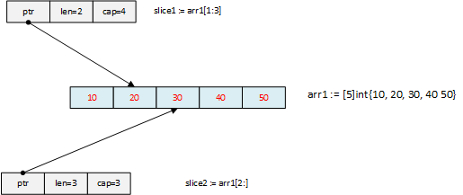

Golang slice and append
In Golang, a slice is a reference to a contiguous segment of an array. Slice is basically a pointer, with additional properties about the array.
A slice is a structure of 3 fields.
- a pointer to the underlying array
- length of the slice
- capacity of the slice
You can see this in slice.go, here https://github.com/golang/go/blob/master/src/runtime/slice.go
// slice1.go
package main
import (
"fmt"
)
func main() {
var arr1 = [5]int { 10, 20, 30, 40, 50}
var slice1 []int = arr1[1:3]
var slice2 []int = arr1[2:]
fmt.Printf("array: %v len: %d\n", arr1, len(arr1))
fmt.Printf("slice1: %v len: %d cap: %d\n", slice1, len(slice1), cap(slice1))
fmt.Printf("slice2: %v len: %d cap: %d\n", slice2, len(slice2), cap(slice2))
arr1[2] = 35
fmt.Printf("array: %v len: %d\n", arr1, len(arr1))
fmt.Printf("slice1: %v len: %d cap: %d\n", slice1, len(slice1), cap(slice1))
fmt.Printf("slice2: %v len: %d cap: %d\n", slice2, len(slice2), cap(slice2))
}
Output
array: [10 20 30 40 50] len: 5
slice1: [20 30] len: 2 cap: 4
slice2: [30 40 50] len: 3 cap: 3
array: [10 20 35 40 50] len: 5
slice1: [20 35] len: 2 cap: 4
slice2: [35 40 50] len: 3 cap: 3
Both the slices point to the same memory, any changes to the actual data will impact all the slices pointing to the array. So, if you have an array and many slices pointing to the same array, there can be many places where the array can be changed. So, this is a disaster going to happen.

You should avoid exposing the array and always keep it anonymous.
Golang provides make() to achieve this objective. make() allows us to create a slice when the underlying array is not defined.
slice1 := make([]type, len) //case 1
slice2 := make([]type, len, cap) // case 2
In the first case, the slice is pointing to an array of length ‘len’.
Here, the following statement is true
cap(slice1) = len(slice1) = len
In the second case, slice2 doesn’t occupy the entire underlying array. The array has a length ‘cap’ and slice has length ‘len’. There is space for reslicing.
Reslicing
Changing the length of the slice is called reslicing. It is done by increasing the end index of the slice, until it occupies the entire array.
Increase the slice length by 1
s = s[0:len(s)+1]
Slice length can be reached upto the capacity. If the length crosses the capacity, it will panic at run time.
The capacity is a limitation in reslicing. So, golang provides an built-in function append() to fix this issue.
The built-in append() does the following
append()appends zero or more values to a slice and returns the resulting slice.- allocates a new, sufficiently large slice
- always succeeds, unless the computer runs out of memory
append() may either modify its argument in-place or return a copy of its argument with an additional entry, depending on the size and capacity of its input. append() function creates a new slice, if the length the slice is greater than the length of the array pointed by the slice.
// append.go
package main
import (
"fmt"
)
func main() {
var arr1 = [5]int { 10, 20, 30, 40, 50}
var slice1 []int = arr1[1:4]
fmt.Printf("array: %v\n", arr1)
fmt.Printf("slice1: %v\n", slice1)
//modify the underlying array
slice1 = append(slice1, 56)
fmt.Printf("array: %v\n", arr1)
fmt.Printf("slice1: %v\n", slice1)
//creates a new array and returns slice pointing to it
slice1 = append(slice1, 69)
fmt.Printf("array: %v\n", arr1)
fmt.Printf("slice1: %v\n", slice1)
}
Output
array: [10 20 30 40 50]
slice1: [20 30 40]
array: [10 20 30 40 56]
slice1: [20 30 40 56]
array: [10 20 30 40 56]
slice1: [20 30 40 56 69]
In the first append(), the argument is modified and in the 2nd append(), a new slice is created.